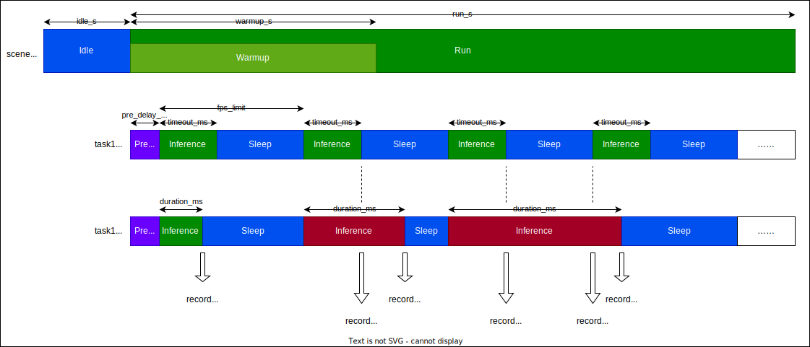

dInfer模型运行工具
为了便于用户快速评估模型性能，提供了dInferNetRun二进制工具，用户可通过json文件配置不同的场景以及运行参数。
场景运行持续时间、预热时间
场景中每个任务的模型配置（模型文件路径、是否加密、框架、后端）以及时间配置（帧率限制、超时时间、延时偏移）
特定后端配置信息：TRT、QNN等，可参考对应的高阶API说明
使用方法
用户需要指定一个配置文件，用于描述测试场景（可以有多个），并在执行测试时指定一个测试场景名称。
Usage:
--scene_cfgs=/blackbox/nn_test/data/scene_cfgs.json
指定测试场景配置文件，描述模型配置、运行配置、特定后端配置等
--scene_name=
指定要运行的测试场景名称，为空时将依次运行所有场景
--result_root=/blackbox/nn_test/result
指定结果存储目录
--log_level=DINFER_LOG_INFO
指定log级别，可选值：DEBUG/INFO/WARNING/ERROR
在Android、AC204、OQ101等设备上测试，可以使用dInfer工具箱推送SDK、执行二进制程序。
示例：
# 在PC端运行
dInferNetRun --scene_cfgs=./scene_cfgs.json --scene_name=water_trt_demo --result_root=./result --log_level=DEBUG
# 借助dInfer_toolkit在AC204/OQ101等设备上运行（scene_cfgs和result_root使用默认值）
python ${dInfer_sdk}/dInfer_toolkit.py --push_sdk --push_data --run dInferNetRun --scene_name=denoise_qnn_demo
场景配置说明
场景配置格式
场景配置的各个字段使用json schema定义，并在加载配置时进行校验。
主要分为以下层级：
测试场景: 可以配置场景的空闲时间、运行时间、预热时间，一个场景可以包含多个任务并发执行
任务：可以配置任务的模型文件路径、模型是否加密、框架、后端、帧率限制、超时时间、延时偏移、特定后端配置信息等。
相对路径将基于当前工作目录补全。
{
"$schema": "https://json-schema.org/draft/2020-12/schema",
"title": "dInferNetRun场景配置格式v1.0",
"type": "array",
"items": {
"type": "object",
"required": ["scene_name", "idle_s", "run_s", "warmup_s", "tasks"],
"properties": {
"scene_name": {
"type": "string",
"description": "场景名称"
},
"idle_s": {
"type": "number",
"description": "场景运行前的空闲时间，通常用于采样静态功耗"
},
"run_s": {
"type": "number",
"description": "场景运行时间"
},
"warmup_s": {
"type": "number",
"description": "场景运行前期预热的时间，该时间段内不会进行耗时、超时、丢帧统计，该事件不能超过run_s"
},
"tasks": {
"type": "array",
"description": "场景中包含的推理任务列表，一个任务对应一个模型，每个任务会创建一个线程，多任务时并发执行",
"items": {
"type": "object",
"required": ["task_name", "model_path", "encrypted", "engine", "device", "fps_limit", "pre_delay_ms", "timeout_ms"],
"properties": {
"task_name": {
"type": "string",
"description": "任务/线程名称"
},
"model_path": {
"type": "string",
"description": "模型文件路径，绝对路径，或使用占位符处理相对路径"
},
"encrypted": {
"type": "boolean",
"description": "模型是否加密"
},
"engine": {
"type": "string",
"description": "模型使用的推理框架",
"enum": ["TRT", "QNN", "MNN","TFLITE"]
},
"device": {
"type": "string",
"description": "模型运行后端",
"enum": ["HTP", "GPU", "CPU"]
},
"fps_limit": {
"type": "number",
"description": "任务的帧率限制，丢失的帧会被统计；0表示不限制（一帧结束后立即推理下一帧）"
},
"pre_delay_ms": {
"type": "number",
"description": "首次推理延时，用于在多任务场景中控制各个任务的启动时间"
},
"timeout_ms": {
"type": "number",
"description": "单帧推理超时时间，超时的帧会被统计；0表示不统计超时时间"
},
"optional_attrs": {
"type": "object",
"description": "用于传递特定框架的配置信息",
"properties": {
"qnn_load_from_cache": {
"type": "boolean",
"description": "QNN加载模型是否为模型缓存（而不是模型库）"
},
"qnn_shared_buffer": {
"type": "boolean",
"description": "QNN是否使用共享内存"
},
"qnn_log_level": {
"type": "string",
"description": "QNN内部日志等级",
"enum": ["DEBUG", "INFO", "WARNING", "ERROR"]
},
"qnn_power_config": {
"type": "object",
"description": "QNN功耗配置",
"required": ["dcvsEnable", "powerMode", "sleepLatency", "sleepDisable", "busVoltageCornerMin", "busVoltageCornerTarget", "busVoltageCornerMax", "coreVoltageCornerMin", "coreVoltageCornerTarget", "coreVoltageCornerMax"],
"properties": {
"dcvsEnable": {
"type": "boolean",
"description": "是否启用DCVS"
},
"powerMode": {
"type": "string",
"description": "功耗模式",
"enum": ["ADJUST_UP_DOWN", "ADJUST_ONLY_UP", "POWER_SAVER_MODE", "POWER_SAVER_AGGRESSIVE_MODE", "PERFORMANCE_MODE", "DUTY_CYCLE_MODE"]
},
"sleepLatency": {
"type": "number",
"description": "睡眠延迟"
},
"sleepDisable": {
"type": "boolean",
"description": "是否禁用睡眠"
},
"busVoltageCornerMin": {
"type": "string",
"description": "内存总线VoltageCorner最小值",
"enum": ["DISABLE", "SVS2", "SVS", "SVS_PLUS", "NOM", "NOM_PLUS", "TURBO", "TURBO_PLUS", "TURBO_L2", "TURBO_L3", "MAX"]
},
"busVoltageCornerTarget": {
"type": "string",
"description": "内存总线VoltageCorner目标值",
"enum": ["DISABLE", "SVS2", "SVS", "SVS_PLUS", "NOM", "NOM_PLUS", "TURBO", "TURBO_PLUS", "TURBO_L2", "TURBO_L3", "MAX"]
},
"busVoltageCornerMax": {
"type": "string",
"description": "内存总线VoltageCorner最大值",
"enum": ["DISABLE", "SVS2", "SVS", "SVS_PLUS", "NOM", "NOM_PLUS", "TURBO", "TURBO_PLUS", "TURBO_L2", "TURBO_L3", "MAX"]
},
"coreVoltageCornerMin": {
"type": "string",
"description": "计算核电压最小值",
"enum": ["DISABLE", "SVS2", "SVS", "SVS_PLUS", "NOM", "NOM_PLUS", "TURBO", "TURBO_PLUS", "TURBO_L2", "TURBO_L3", "MAX"]
},
"coreVoltageCornerTarget": {
"type": "string",
"description": "计算核电压目标值",
"enum": ["DISABLE", "SVS2", "SVS", "SVS_PLUS", "NOM", "NOM_PLUS", "TURBO", "TURBO_PLUS", "TURBO_L2", "TURBO_L3", "MAX"]
},
"coreVoltageCornerMax": {
"type": "string",
"description": "计算核电压最大值",
"enum": ["DISABLE", "SVS2", "SVS", "SVS_PLUS", "NOM", "NOM_PLUS", "TURBO", "TURBO_PLUS", "TURBO_L2", "TURBO_L3", "MAX"]
},
"rpcControlLatency": {
"type": "number",
"description": "RPC控制延迟"
},
"rpcPollingTime": {
"type": "number",
"description": "RPC轮询时间"
}
}
},
"trt_cache_path": {
"type": "string",
"description": "TensorRT模型缓存路径，绝对路径，或使用占位符处理相对路径"
}
}
}
}
}
}
}
}
}
场景配置示例
以下是一个简单的示例：
[
{
"scene_name": "water_demo",
"description": "用于演示单模型性能评估",
"idle_s": 5,
"run_s": 60,
"warmup_s": 5,
"tasks": [
{
"task_name": "water",
"model_path": "model/water.onnx",
"encrypted": false,
"engine": "TRT",
"device": "GPU",
"fps_limit": 30,
"pre_delay_ms": 0,
"timeout_ms": 0,
"optional_attr": {
"trt_cache_path": "model/water.trtModel"
}
}
]
}
]
其中时间相关配置可参考示意图：

对于每个任务，以下信息将会被统计：
每一帧的运行时间
超时帧计数
丢帧计数
推理接口执行成功/失败计数
常用测试步骤
# 以特定平台SDK目录为工作目录
cd ${dInferSDK}/${PLATFORM}
# 准备模型
cp ${test_model} model/
# 修改运行配置文件
vim ./data/scene_cfgs.json
# 创建结果目录
mkdir -p result
# 执行测试
dInferNetRun --scene_cfgs=./data/scene_cfgs.json --scene_name=denoise_qnn_demo --result_root=./result
# 查看结果及日志
cat ./result/denoise_qnn_demo.json
cat ./result/denoise_qnn_demo.log
输出结果示例
输出结果中，包含完整的测试场景配置、任务配置。各个任务的耗时统计信息保存在result字段中。
{
"device": {
"cpu_info": "unknown",
"device_model": "",
"soc_id": 577,
"soc_name": "SM8625"
},
"idle_s": 5.0,
"run_s": 60.0,
"scene_name": "water_qnn_demo",
"tasks": [
{
"device": "DINFER_HTP",
"encrypted": false,
"engine": "DINFER_QNN",
"fps_limit": 30.0,
"model_path": "model/denoise_229_htp_vtcm8mb.serialized.bin",
"optional_attrs": {
"qnn_load_from_cache": true,
"qnn_log_level": "DINFER_LOG_WARNIING",
"qnn_power_config": {
"busVoltageCornerMax": "NOM",
"busVoltageCornerMin": "NOM",
"busVoltageCornerTarget": "NOM",
"coreVoltageCornerMax": "NOM",
"coreVoltageCornerMin": "NOM",
"coreVoltageCornerTarget": "NOM",
"dcvsEnable": 1,
"powerMode": "POWER_SAVER_MODE",
"sleepDisable": 1,
"sleepLatency": 40
},
"qnn_shared_buffer": true
},
"pre_delay_ms": 0.0,
"result": {
"avg_ms": 10.398794174194336,
"frame_dropped": 0,
"frame_failed": 0,
"frame_successed": 1801,
"frame_timeout": 1801,
"init_ms": 130.82864379882813,
"max_ms": 21.131999969482422,
"min_ms": 10.081000328063965,
"status": "SUCCESSED",
"std_ms": 0.3455895483493805,
"time_ms_list": [
12.602999687194824,
11.281000137329102,
],
"timestamp_us_list": [
[
17708473373,
17708485976
],
[
17708507712,
17708518993
],
]
},
"task_name": "water",
"timeout_ms": 0.0
}
],
"warmup_s": 5.0
}